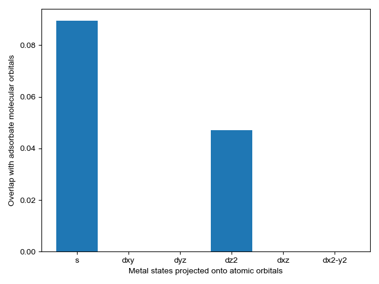
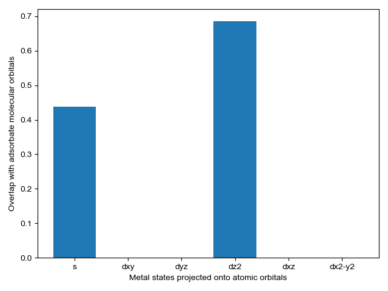

Note
Click here to download the full example code
Calculating orbital overlap using pdos_overlap¶
This example shows how calculate the overlap of gas phase molecular orbitals with an adsorbate and surface atom.
import os
import numpy as np
from pdos_overlap.vasp_dos import VASP_DOS
from pdos_overlap import get_adsorbate_indices
from pdos_overlap import PDOS_OVERLAP
from pdos_overlap.overlap_population import OVERLAP_POPULATION
import matplotlib.pyplot as plt
Downloads_folder = os.path.join(os.path.expanduser("~"),'Downloads')
Load DOSCAR file¶
First we will, get the example data, load a DOSCAR file and use it to instantiate a VASP_DOS object.
gas = 'gases/CO'
adsorbate = 'CO'
surface = 'Pt111'
np.set_printoptions(linewidth=100)
#These files are too large to store in the examples directory
lobster_path = r'C:\Users\lansf\Documents\Data\PROBE_PDOS\lobster_files_(N+1)bands'
GAS_DOSCAR = os.path.join(lobster_path, gas + '/DOSCAR.lobster')
GAS_CONTCAR = os.path.join(lobster_path, gas + '/CONTCAR')
ADSORBATE_DOSCAR = os.path.join(lobster_path, 'surfaces_noW/'+surface + '+'\
+ adsorbate + '/DOSCAR.lobster')
ADSORBATE_CONTCAR = os.path.join(lobster_path, 'surfaces_noW/'+surface + '+'\
+ adsorbate + '/CONTCAR')
Generate VASP_DOS objects¶
VASP_DOS objects for both the gas (vacuum) and the adsorbate+surface system
GAS_PDOS = VASP_DOS(GAS_DOSCAR)
REFERENCE_PDOS = VASP_DOS(ADSORBATE_DOSCAR)
#REFERENCE_PDOS.apply_gaussian_filter(10)
Get adsorbate and site indices and initialize PDOS_OVERLAP object¶
This method utilizes two VASP_DOS objects, a gas and an adsorption system. It uses the adosorbtion system (REFERENCE_PDOS) to map gas molecular orbitals to adsorbate molecular orbitals. It then calculates the adsorption site atomic orbital energy overlaps with the adsorbate molecular orbital energies.
reference_indices, site_indices = get_adsorbate_indices(GAS_CONTCAR\
, ADSORBATE_CONTCAR)
#Initialize Coordination object. Repeat is necessary so it doesn't count itself
CO_overlap = PDOS_OVERLAP(GAS_PDOS, REFERENCE_PDOS, reference_indices\
, site_indices, min_occupation=0.9\
, upshift=0.5, energy_weight=4)
Plot projected density¶
We plot the projected density of the gas, adsorbate, and adsorption site.
CO_overlap.plot_projected_density(figure_directory='print')

Out:
C:\Users\lansf\Box Sync\Synced_Files\Coding\Python\Github\pDOS_overlap\pdos_overlap\pdos_overlap.py:971: UserWarning: Matplotlib is currently using agg, which is a non-GUI backend, so cannot show the figure.
plt.show()
Find the optimal upshift factor¶
The optimal upshift factor shifts the gas molecular orbital energies to minimize the sum the orbital scores used in matching gas and adsorbate orbitals. This has the effect of increasing certainty and roughly corresponds to the average shift in molecular orbital energies when a gas adsorbs to the surface
optimized_upshift = CO_overlap.optimize_energy_shift(bound=[-10,10]\
, reset=True, plot=True)
print(optimized_upshift)

Out:
C:\Users\lansf\Box Sync\Synced_Files\Coding\Python\Github\pDOS_overlap\pdos_overlap\pdos_overlap.py:833: UserWarning: Matplotlib is currently using agg, which is a non-GUI backend, so cannot show the figure.
plt.show()
4.5774990494431975
Identify bonding orbitals¶
We calcluate the amount of density for each orbital that is in a bonding region We can do this both for the gas and for the adsorbate
#gas
COOPCAR_CO = os.path.join(lobster_path, gas + '/COOPCAR.lobster')
POP_CO_GAS = OVERLAP_POPULATION(COOPCAR_CO)
bonding_states = POP_CO_GAS.get_bonding_states(CO_overlap.gas_orbital_indices\
, CO_overlap.GAS_PDOS.get_energies()\
, set_antibonding_zero=False)
print('Gas bonding states')
print(bonding_states)
#adsorbate
COOPCAR_CO = os.path.join(lobster_path, 'surfaces_noW/'+surface + '+'\
+ adsorbate + '/COOPCAR.lobster')
POP_CO_ADSORBATE = OVERLAP_POPULATION(COOPCAR_CO)
bonding_states = POP_CO_ADSORBATE.get_bonding_states(CO_overlap.adsorbate_orbital_indices\
, CO_overlap.REFERENCE_PDOS.get_energies()\
, set_antibonding_zero=True
, emax = CO_overlap.REFERENCE_PDOS.e_fermi)
print('Adsorbate bonding states')
print(bonding_states)
bonding_states = POP_CO_ADSORBATE.get_bonding_states(CO_overlap.adsorbate_orbital_indices
, CO_overlap.REFERENCE_PDOS.get_energies()
, interactions = [2]
, set_antibonding_zero=False
, emax = CO_overlap.REFERENCE_PDOS.e_fermi)
print('C-O bonding states')
print(bonding_states)
print(CO_overlap.adsorbate_band_centers)
print(CO_overlap.adsorbate_occupations)
Out:
Gas bonding states
[0.32857503080831574, 0.04984388291942448, 0.4167377170944606, -0.2474084481937029, -0.8939270458071957, -1.4954457021959855, -1.823124440481903]
Adsorbate bonding states
[0.31000739229720375, 0.23427202280494233, 0.08807051817544552, 0.4599271644410861, 0.04355907479835258]
C-O bonding states
[0.3052212147472367, 0.053268855851129136, -0.05700779103685123, 0.3604014118201847, -0.10831114372877033]
[-24.28840422 -10.72510378 -8.0377708 -7.17758304 1.89603313]
[1.99592759 1.52472668 1.71156427 3.23883368 7.53202893]
Plot energy overlap¶
We select energy overlap histograms with the adsorbate molecular orbitals that influence spectra. Gas orbitals 1,2, and 3 interact with the surface.
CO_overlap.plot_energy_overlap(indices=[0,1,2,3], atomic_orbitals=['s', 'd']
, figure_directory='print')
- 
- 


Out:
C:\Users\lansf\Box Sync\Synced_Files\Coding\Python\Github\pDOS_overlap\pdos_overlap\pdos_overlap.py:897: UserWarning: Matplotlib is currently using agg, which is a non-GUI backend, so cannot show the figure.
plt.show()
Obtain projected overlap¶
We projected orbital overlap for the C-C bond and C-H bonds in C2H4 We group the CH bonds and ensure to sum for spins as all electrons are paired
GAS_OVERLAP = POP_CO_GAS.get_pcoop([0], sum_pcoop=True)
ADSORBATE_OVERLAP = POP_CO_ADSORBATE.get_pcoop(sum_pcoop=True,set_antibonding_zero=True)
CO_OVERLAP = POP_CO_ADSORBATE.get_pcoop([2],sum_pcoop=True)
Plot the bonding populaiton with respect to the CC and CH bonds¶
A positive value on the x-axis indicates are greater proportion of states in in the bond than outside of the bond
fig = plt.figure(figsize=(7.2,4))
abc = ['(a)','(b)','(c)']
axes = fig.subplots(nrows=1, ncols=3)
axes_list = [axes[0], axes[1], axes[2]]
#plotting function
def plot_density(OVERLAP, energies, e_fermi, index):
axes_list[index].plot(OVERLAP, energies, zorder=2)
axes_list[index].plot([np.min(OVERLAP), np.max(OVERLAP)]
,[e_fermi, e_fermi], 'k--', zorder=1, linewidth=5)
axes_list[index].text(0.90,0.96,abc[index],transform=axes_list[index].transAxes)
#plot gas density
plot_density(GAS_OVERLAP, POP_CO_GAS.get_energies(), POP_CO_GAS.e_fermi, 0)
#plot adsorbate density
plot_density(CO_OVERLAP, POP_CO_ADSORBATE.get_energies(), POP_CO_ADSORBATE.e_fermi, 1)
#plot adsorption-site density
plot_density(ADSORBATE_OVERLAP, POP_CO_ADSORBATE.get_energies(), POP_CO_ADSORBATE.e_fermi, 2)
fig.text(0.001, 0.5, 'Energy [eV]', va='center', rotation='vertical')
fig.text(0.5, 0.01, 'Overlap density [states/eV]', ha='center')
figure_path = os.path.join(Downloads_folder,'pccop.jpg')
fig.set_tight_layout({'pad':2,'w_pad':1})
fig.show()
plt.close()
Out:
C:\Users\lansf\Box Sync\Synced_Files\Coding\Python\Github\pDOS_overlap\examples\plot_orbital_overlap\plot_orbital_overlap.py:167: UserWarning: Matplotlib is currently using agg, which is a non-GUI backend, so cannot show the figure.
fig.show()
Total running time of the script: ( 0 minutes 8.245 seconds)